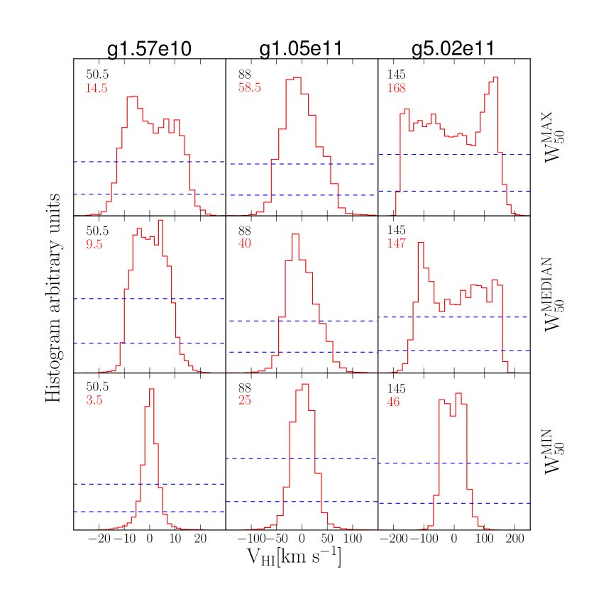
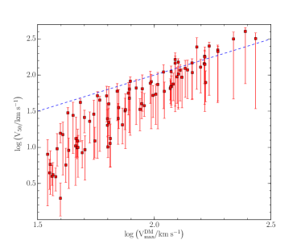
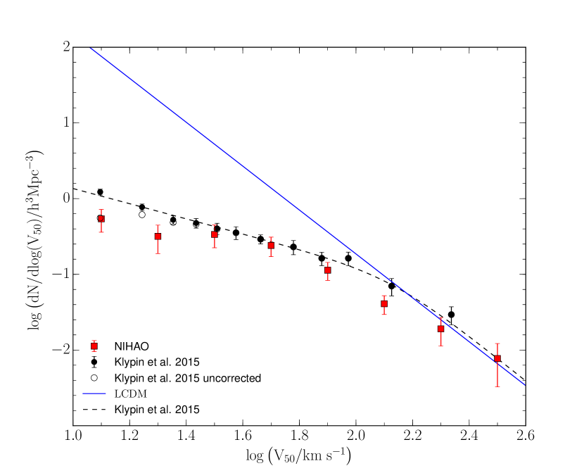
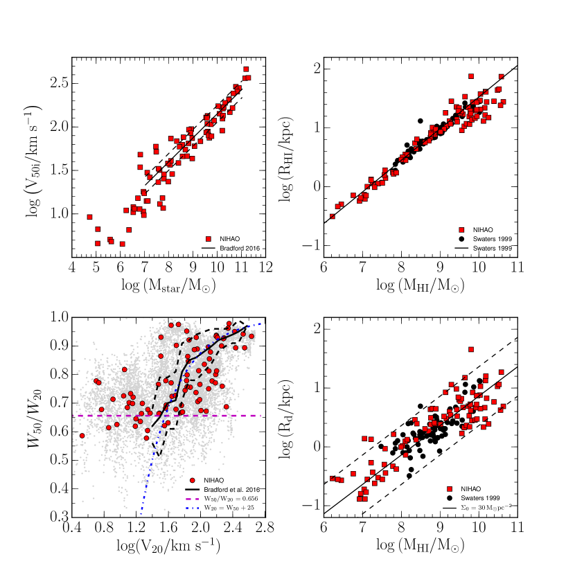

NIHAO X: التوفيق بين دالة سرعات المجرات المحلية والمادة المظلمة الباردة عبر أرصاد Hi صورية
الملخص
استخدمنا 87 محاكاة كونية هيدروديناميكية عالية الدقة من مجموعة NIHAO لدراسة العلاقة بين السرعة الدائرية العظمى () لهالة المادة المظلمة في محاكاة عديمة التصادم وعرض سرعة غاز Hi في الهالة نفسها في المحاكاة الهيدروديناميكية. وتُستعمل هاتان الكميتان عادةً لمقارنة دوال السرعات النظرية والرصدية، وقد أدّتا إلى احتمال وجود تباين بين الأرصاد والتنبؤات القائمة على نموذج المادة المظلمة الباردة (CDM). نبيّن أنه دون 100 ، يوجد انحياز واضح بين السرعات المستندة إلى Hi و، وهو ما يفضي إلى تقليل تقدير السرعة الدائرية الفعلية للهالة. وعند أخذ هذا الانحياز في الحسبان لا يواجه نموذج CDM أي صعوبة في إعادة إنتاج دالة السرعات المرصودة، ولا يظهر في الواقع أي نقص في المجرات ذات السرعات المنخفضة. كما تعيد محاكياتنا إنتاج علاقة عرض الخط بالكتلة النجمية (تولي-فيشر) وأحجام Hi ، مما يدل على أن غاز Hi في محاكياتنا ممتد بالقدر المرصود. أما السبب الفيزيائي لكون عروض الخطوط أصغر من المتوقع فهو أن المجرات منخفضة الكتلة، خلافاً للمجرات عالية الكتلة، لم تعد تمتلك أقراص Hi دوارة رقيقة وممتدة كما يُفترض عادةً.
keywords:
علم الكون: النظرية – المادة المظلمة – المجرات: التكوّن – المجرات: الحركيات والديناميكيات – المجرات: البنية – الطرائق: عددية1 مقدمة
ينجح سيناريو المادة المظلمة الباردة (CDM) نجاحاً كبيراً في إعادة إنتاج البنية واسعة النطاق للكون (Springel et al., 2005) والتباينات في الخلفية الكونية الميكروية (Planck Collaboration et al., 2014). وفي كون CDM يمضي تشكّل البنى بطريقة من أسفل إلى أعلى، إذ تنهار البنى الصغيرة أولاً ثم تندمج لتكوّن هالات أكبر فأكبر. ويتنبأ هذا السيناريو بعدد أكبر من البنى منخفضة الكتلة مقارنةً بالبنى الأعلى كتلة، أو بعبارة أخرى بدالة كتلة هالات شديدة الانحدار. ويبدو هذا التنبؤ غير متوافق مع البيانات الرصدية سواء حول المجرات، مثل وفرة السواتل (Klypin et al., 1999; Moore et al., 1999) أو في الحجم المحلي (Cole & Kaiser, 1989; Zavala et al., 2009; Trujillo-Gomez et al., 2011).
في السنوات الأخيرة اقتُرحت عدة حلول للتوفيق بين العدد المرصود للسواتل حول مجرتي درب التبانة وأندروميدا وبين تنبؤات CDM (Bullock et al., 2000; Benson et al., 2002; Macciò et al., 2010; Font et al., 2011, والمراجع الواردة فيها). وتستند هذه الحلول كلها (بدرجات مختلفة) إلى حقيقة أن تشكّل المجرات يصبح غير فعّال إلى حد بعيد في هالات المادة المظلمة منخفضة الكتلة، بسبب الخلفية المؤيّنة، وانفجارات المستعرات العظمى (SN)، وإزالة الغاز بفعل ضغط الصدم. ونتيجةً لذلك، يمكن بإدخال العمليات الباريونية في الحسبان التوفيق بين وفرة السواتل في المجموعة المحلية وتنبؤات CDM (مثلاً، Sawala et al., 2016).
تأتي المجرات الحقلية في الحجم المحلي ودالة سرعاتها بتحدٍّ أكثر استمراراً. وتُعرَّف دالة سرعات المجرات (GVF) بأنها وفرة المجرات ذات سرعة دائرية معينة، وهي تشبه من حيث المفهوم دالة لمعان المجرات. وتتمثل ميزتها في أنه، لنموذج كوني معطى، يمكن من حيث المبدأ التنبؤ بالسرعات الدائرية بدقة أكبر بكثير من اللمعانات، لأنها أقل اعتماداً على فيزياء تشكّل المجرات التي لا تزال غير مفهومة جيداً. وهذا يجعل دوال السرعات أداة مفيدة جداً لاختبار النماذج النظرية (Zavala et al., 2009; Papastergis et al., 2011).
حديثاً، قدّم Klypin et al. (2015, ويشار إليه فيما يلي بـ K15) قياسات جديدة لـ GVF في الحجم المحلي ( Mpc)، وبيّن أنه في حين يقدّم CDM تقديرات جيدة جداً لعدد المجرات ذات السرعات الدائرية حول وما فوقها، فإنه يفشل فشلاً كبيراً عند السرعات الدائرية الأصغر، إذ يبالغ في تقدير عدد المجرات القزمة في مجال السرعات بما يصل إلى عامل خمسة. وكما أشار K15 ومؤلفون آخرون (مثلاً، Zavala et al., 2009) فإن المجرات في مجال السرعات هذا غير حساسة عملياً للخلفية المؤيّنة، وبما أنها ليست سواتل فإنها لا تتأثر باستنزاف الغاز عبر ضغط الصدم ولا بالتعرية النجمية. وهذا يجعل عدم التطابق بين GVF المرصودة وتنبؤات CDM مشكلة جدية إلى حد بعيد للنموذج الكوني الحالي. وعلاوةً على ذلك، يبدو أن التعديلات البسيطة في نموذج CDM، مثل إدخال مكوّن من المادة المظلمة الدافئة (مثلاً، Schneider et al., 2014)، لا تستطيع أيضاً حل هذه المسألة، كما بيّن K15.
أظهر Brook & Di Cintio (2015) أن جماعة من المجرات ذات مقاطع كتلية معدّلة بفعل التغذية الراجعة الباريونية (Di Cintio et al., 2014) قادرة على تفسير GVF تفسيراً أفضل بكثير من نموذج يُفترض فيه مقطع كثافة مدبّب كوني عام. وفي هذه الرسالة نعيد فحص أثر تشكّل المجرات في GVF باستخدام المحاكيات الهيدروديناميكية من مشروع NIHAO (Wang et al., 2015). وخلافاً لكثير من الدراسات النظرية السابقة، التي تستخدم بدائل تقريبية لعروض خطوط Hi ، فإننا نقيسها مباشرةً. إن اجتماع الدقة المكانية العالية وكبر حجم العينة يجعل NIHAO ملائماً على نحو مثالي لدراسة العلاقة بين سرعة الدوران المستنتجة من حركيات مكوّن غاز Hi والسرعة الدائرية العظمى للهالة، ومن ثم لإلقاء الضوء على الأسباب الكامنة وراء التباين الكبير بين GVF المتنبأ بها على أساس CDM وGVF المرصودة.
2 المحاكيات
مشروع NIHAO هو مجموعة من محاكيات كونية هيدروديناميكية كاملة ذات تكبير موضعي تغطي مجالاً واسعاً من كتل المجرات، من المجرات القزمة إلى الحلزونات الضخمة (سرعة الهالة الفريالية من إلى ). ومن خصائص مجرات NIHAO أنها تملك تقريباً الدقة النسبية نفسها، ومن ثم العدد نفسه من جسيمات المادة المظلمة داخل نصف القطر الفريالي (See Fig. 2 of Wang et al., 2015). وقد أُنشئت الشروط الابتدائية المكبّرة باستخدام نسخة معدّلة من grafic2 (Bertschinger, 2001; Penzo et al., 2014). تُحاكى كل هالة في البداية بدقة عالية بالمادة المظلمة فقط باستخدام pkdgrav (Stadel, 2001)، ثم يُعاد تحاكيها مع الباريونات. ونشير إلى محاكيات المادة المظلمة فقط باسم N-body وإلى المحاكيات ذات الباريونات باسم hydro أو NIHAO.
تُطوَّر المحاكيات الهيدروديناميكية باستخدام نسخة محسّنة من شيفرة SPH المسماة gasoline (Wadsley et al., 2004; Keller et al., 2014). وتتضمن الشيفرة نموذجاً دون شبكي للمزج المضطرب للمعادن والطاقة، وتشمل عمليتا التسخين والتبريد التسخين الكهروضوئي لحبيبات الغبار، والتسخين والتأين بفعل الأشعة فوق البنفسجية (UV)، والتبريد الناجم عن الهيدروجين والهيليوم والمعادن (Shen et al., 2010). وتتبع نمذجة تشكّل النجوم والتغذية الراجعة ما استُخدم في محاكيات MaGICC (Stinson et al., 2013)، مع اعتماد عتبة لتشكّل النجوم قدرها cm-3. ويمكن للنجوم أن تعيد الطاقة إلى الوسط بين النجمي ISM عبر تغذية راجعة من المستعرات العظمى (SN) ذات موجات الانفجار (Stinson et al., 2006)، وكذلك عبر الإشعاع المؤيّن من النجوم الضخمة (تغذية راجعة نجمية مبكرة) قبل أن تتحول إلى SN (Stinson et al., 2013). وتنتج المعادن من SN من النمط II والنمط Ia. وهذه، إلى جانب الرياح النجمية من نجوم الفرع العملاق المقارب، تعيد أيضاً الكتلة إلى ISM. وتُحدَّد حصة الكتلة النجمية التي تنتهي إلى SN ورياح باستخدام دالة الكتلة الابتدائية النجمية لدى Chabrier (2003). ونحيل القارئ إلى Wang et al. (2015) من أجل وصف أكثر تفصيلاً للشيفرة والمحاكيات.
2.1 مجرات NIHAO
نظراً إلى أن هدفنا هو دراسة أثر الباريونات في دالة سرعات المجرات، فمن المهم جداً استخدام مجرات محاكاة واقعية. وفي هذا الصدد، تبلي مجرات مشروع NIHAO بلاءً ممتازاً، إذ تتسق مع مدى واسع من خصائص المجرات في الكون المحلي والبعيد معاً: تطور نسبة الكتلة النجمية إلى كتلة الهالة ومعدلات تشكّل النجوم (Wang et al., 2015)؛ محتوى الغاز البارد والساخن (Stinson et al., 2015; Wang et al., 2016; Gutcke et al., 2016)؛ حركيات الأقراص النجمية (Obreja et al., 2016)؛ الانحدارات الداخلية الضحلة لكثافة المادة المظلمة في المجرات القزمة (Tollet et al., 2016)؛ كما تحل مشكلة “الأكبر من أن يفشل” للمجرات الحقلية (Dutton et al., 2016). لذلك فهي توفر قوالب معقولة، وإن لم تكن وحيدة، للعلاقة التي تربط سرعة المادة المظلمة الدائرية بالسرعة المستنتجة من ديناميكيات Hi .
2.2 حساب Hi
في حساب كسر الهيدروجين المحايد Hi نستخدم تقريب الحجب الذاتي الموصوف في Rahmati et al. (2013)، المستند إلى محاكيات النقل الإشعاعي الكامل المعروضة في Pawlik & Schaye (2011). ويعرّف تقريب الحجب الذاتي عتبة كثافة تُثبَط فوقها عملية التأين الضوئي لـ Hi . ونحسب هذه العتبة بالاستيفاء بين قيم الانزياح الأحمر لخلفيتنا الثابتة من الأشعة فوق البنفسجية اعتماداً على Haardt & Madau (2001)، ثم باستخدام الجدول 2 في Rahmati et al. (2013). ويتمثل الأثر الكلي لهذا النهج القائم على الحجب الذاتي في زيادة كمية Hi (نسبةً إلى الحساب المرجعي في gasoline)، مما يجعل المحاكيات في اتفاق أفضل مع الأرصاد (Rahmati et al., 2013; Gutcke et al., 2016).

3 البيانات الرصدية
في هذه الرسالة سنستخدم دالة السرعات كما حسبها K15 باستخدام الفهرس المحدّث للمجرات القريبة من Karachentsev et al. (2013)، الذي يحتوي على مسافات مستقلة عن الانزياح الأحمر حتى Mpc لـ 869 مجرة. وقد حُصل على السرعات من عروض سرعات Hi بالنسبة إلى الغالبية العظمى من المجرات ()، في حين أُسند إلى المجرات التي لا تملك قياسات لعرض خط Hi قياس لسرعة خط البصر باستخدام علاقة اللمعان المتوسطة بالسرعة في نطاق K للمجرات ذات تشتتات السرعة النجمية المقاسة. وتتفق GVF الناتجة على نحو معقول مع نتائج Hi الصرفة السابقة من HIPASS (Zwaan et al., 2010) وALFALFA (Papastergis et al., 2011) في مجال السرعات 25-150 حيث تتداخل. ولغرض المقارنة بصورة أفضل مع المحاكيات، استخدم K15 (المسمى في K15) بوصفه السرعة الرصدية، وهو معرّف بأنه عرض توزيع السرعات عند نصف الارتفاع () مقسوماً على اثنين. وسنستخدم نقاط البيانات الأصلية من K15 بوصفها دالة السرعات الرصدية في بقية هذه الرسالة.
4 النتائج
تستند سرعات الدوران المرصودة عادةً إلى مسوح واسعة المساحة عند 21 cm. وبفضل طبيعتها الطيفية، توفر مسوح Hi تلقائياً ملف خط Hi الطيفي لكل مصدر مكتشف. ويمكن استخراج عرض السرعة () لكل مجرة بسهولة، ومن ثم يصبح ممكناً بناء دالة سرعات (مثلاً، Papastergis et al., 2011).
وكخطوة أولى، أعدنا إنتاج هذه العملية الرصدية في مجراتنا. يبين الشكل 1 توزيع سرعات غاز Hi في ثلاث مجرات مختلفة تزداد كتلتها من اليسار إلى اليمين. وبما أن سرعة Hi تعتمد على ميل المجرة، نعرض لكل مجرة ثلاثة اتجاهات مختلفة تعطي عرض السرعة الأعظمي (الصف العلوي)، أو الوسيط (الصف الأوسط)، أو الأصغري (الصف السفلي). ويدل الخطان الأفقيان على تعريفين شائعين للسرعة: العرض عند 50 في المئة () وعند 20 في المئة () من الارتفاع الأعظمي. ونحسب الارتفاع الأعظمي على أنه المتوسط بين التدفق الأعظمي على جانبي السرعات الموجبة والسالبة. وكما هو متوقع، تميل المجرات منخفضة الكتلة إلى امتلاك توزيع ذي قمة واحدة، يكون تقريباً غاوسياً، في حين تبدي المجرات الأضخم علامات واضحة على دعم دوراني وتملك ملفات Hi ثنائية القمة.
لكل مجرة، تُبيَّن سرعة المادة المظلمة الدائرية العظمى (المعرّفة على أنها القيمة العظمى لـ في تشغيل N-body الموافق) في الزاوية اليسرى العليا من كل لوح (بالأسود)، مع قيمة سرعة الدوران للمجرة (بالأحمر)، المعرّفة على أنها نصف العرض عند نصف الارتفاع (). يمكن أن يلاحظ المرء مباشرةً أنه في حين تكون السرعتان ( و) متقاربتين إلى حد بعيد في المجرات الضخمة، تظهر فروق قوية عند الكتل الأصغر، حيث يمكن أن تكون السرعة المستنتجة من حركيات Hi أقل حتى من 20 في المئة من السرعة الدائرية للمادة المظلمة. ويظهر هذا الاتجاه مع الكتلة بوضوح في الشكل 2، حيث نرسم السرعتين (، ) إحداهما مقابل الأخرى11 1 قد تكون القيمة الفعلية لـ في تشغيل hydro مختلفة عن نظيرتها في محاكاة Nbody، أساساً بسبب فقدان الكتلة (الباريونية) في الهالات منخفضة الكتلة (مثلاً، Sawala et al., 2016). ومن ناحية أخرى، نهتم في هذه الرسالة بمقارنة النتائج السابقة من محاكيات Nbody بالنتائج الفعلية من تشغيلات hydro، ولذلك فنحن مهتمون أكثر بمقارنة مع .. وتُرى كل مجرة من مئة خط بصر مختلف، وتمثل المربعات (الحمراء) القيمة الوسيطة بين الإسقاطات المئة، في حين يُستحصل عمود الخطأ بربط القيمتين العظمى والصغرى. وتتسق نتائجنا كثيراً مع نتائج حديثة حصل عليها Vandenbroucke et al. (2016, انظر الشكل 5 لديهم) على الرغم من استخدامهم شيفرة مختلفة وتنفيذاً مختلفاً للتغذية الراجعة.



يمكن استخدام محاكيات N-body الكبيرة، مثل تشغيلات Millennium (Springel et al., 2005) وBolshoi (Klypin et al., 2011)، لحساب دالة توزيع سرعات هالات المادة المظلمة، التي تعطي عدد الهالات في مجال معين من . ويمكن تقريب دالة السرعات هذه جيداً بقانون قوة مفرد، وقد اقترح Klypin et al. (2011) باستخدام محاكاة Bolshoi الصياغة البارامترية الآتية لعلم كون Planck:
| (1) |
تستند مجموعة NIHAO إلى محاكيات عالية الدقة لمجرات منفردة؛ ولهذا نحتاج إلى إسناد وزن مناسب لكل هالة من أجل حساب دالة سرعات. وقد اتبعنا الإجراء الآتي: حسبنا أولاً عدد الهالات في صناديق () باستخدام نظيرها في N-body (بمجموع قدره 87 جسماً). ثم ربطنا بكل صندوق من صناديق وزناً محسوباً كنسبة بين نتائجنا والنتائج العالمية من K15 (المعادلة 1). وأخيراً طبقنا هذه الأوزان على العينة الكاملة من من محاكيات hydro (أي على جميع الإسقاطات المختلفة الـ 100 لكل مجرة، وبمجموع 8700 قيمة لـ )، مما ينتج دالة سرعات يمكن مقارنتها مباشرةً بالأرصاد. ونُسند إلى كل نقطة خطأً مبنياً على ضجيج بواسون في صندوق السرعة ذلك.
تُعرض النتائج في الشكل 3، وهو الشكل المحوري في هذه الرسالة: نعرض بالأسود دالة السرعات المرصودة (النقاط) وملاءمتها التحليلية عبر المعادلة 11 في K15، وبالأزرق دالة سرعات هالات المادة المظلمة من محاكيات Bolshoi (انظر K15)، وأخيراً بالأحمر دالة السرعات كما تتنبأ بها محاكيات NIHAO عند احتساب آثار تشكّل المجرات. يبين هذا الشكل بوضوح أنه، ما إن يؤخذ في الحسبان الإزاحة المعتمدة على الكتلة بين سرعة Hi والسرعة العظمى للهالة، حتى لا تواجه المحاكيات الهيدروديناميكية القائمة على نموذج CDM أي مشكلات في إعادة إنتاج دالة السرعات المرصودة.
يبدو أن نتائج NIHAO تقع دون الطرف منخفض السرعة قليلاً عند مقارنتها بالأرصاد المصححة من عدم الاكتمال (الدوائر السوداء الممتلئة). ومن ناحية أخرى فهي تتفق جيداً مع البيانات الخام (الدوائر المفتوحة). وقد يشير ذلك إلى أن غاز Hi في محاكيات NIHAO مضطرب أكثر مما ينبغي، أو غير ممتد بما يكفي (لكن انظر القسم التالي)، أو أن تصحيح عدم الاكتمال الذي طبقه K15 كان سخياً بعض الشيء. وستساعد المسوح المستقبلية الأعمق، مثل تلك التي ستُجرى بمصفوفة الكيلومتر المربع (Dewdney et al., 2009)، في توضيح هذه المسألة.
4.1 توزيع Hi في NIHAO
للتحقق من صحة نتائجنا الخاصة بـ GVF، نحتاج إلى إظهار أن مجرات NIHAO تملك توزيعات واقعية لسرعات Hi وامتدادات نصف قطرية واقعية. ولمعالجة هذه النقطة نعرض عدة علاقات قياسية. يعرض اللوح العلوي الأيسر من الشكل 4 العلاقة بين الكتلة النجمية وسرعة Hi في NIHAO (المربعات الحمراء) وفي الأرصاد كما قاسها Bradford et al. (2016). والسرعات من Bradford et al. (2016) مصححة من أجل الميل. ولحساب كمية مكافئة في مجرات NIHAO، نجد لكل محاكاة عرض الخط الوسيط من الإسقاطات الـ 100 ثم نقسمه على ، وهو تصحيح الميل الوسيط لتوزيع عشوائي للمجرات في السماء. وقد أطلقنا على هذه السرعة المتوسطة الرمز . وتتفق علاقات تولي-فيشر من محاكيات NIHAO اتفاقاً جيداً جداً مع الأرصاد. يعرض اللوح السفلي الأيسر من الشكل 4 العلاقة بين عروض خطوط NIHAO المقاسة عند 50 في المئة وعند 20 في المئة من تدفق القمة (النقاط الرمادية لجميع الإسقاطات الـ 100 لكل مجرة والمربعات الحمراء للسرعات الوسيطة). وعند السرعات () يكون عرضا الخطين متشابهين، مما يعكس الطبيعة ثنائية القمة والأجنحة الحادة لملفات الخطوط. غير أنه عند السرعات الأصغر يتناقص متبعاً ، وعند يبلغ قيمة متسقة مع قيمة غاوسية . ويسهم هذا التغير في شكل ملف الخط في انحراف عن عند السرعات المنخفضة (Brook & Shankar, 2016). ويبين الاتفاق الجيد بين محاكيات NIHAO والأرصاد من Bradford et al. (2016) (المنحنى الأسود المتصل مع تشتت 1) أن محاكيات NIHAO تملك ملفات خطوط Hi واقعية.
وتستطيع مجرات NIHAO أيضاً إعادة إنتاج العلاقة بين الكتلة الكلية في Hi وامتدادها نصف القطري، كما هو مبين في الألواح اليمنى من الشكل 4. ففي اللوح العلوي نقارن كتلة Hi بنصف قطر المقياس لتوزيعها نصف القطري. وقد حُصل على هذا النصف قطر بملاءمة مقطع أسي لكثافة سطح Hi المواجهة بين نصفي القطر اللذين يحويان 10 في المئة و90 في المئة من كتلة Hi . وفي اللوح السفلي الأيمن نستخدم نصف القطر الذي تهبط عنده كثافة سطح Hi دون 1 /pc2 (انظر Swaters, 1999). وتستطيع مجرات NIHAO (بالأحمر) إعادة إنتاج توزيعات Hi المرصودة (النقاط السوداء) لكلا تعريفي نصف قطر Hi .
5 المناقشة والاستنتاجات
توفر وفرة المجرات ذات عرض خط سرعة معيّن () أداة قوية جداً لاختبار نماذج مختلفة للمادة المظلمة في ضوء الأرصاد، من الباردة (CDM) إلى الدافئة (WDM). وينحرف ميل دالة السرعات هذه عند السرعات المنخفضة () انحرافاً معنوياً عن توقعات نموذج CDM القياسي، مما يؤدي إلى فرق في الوفرة يقارب عاملاً قدره عند (Papastergis et al., 2011, مسح ALFALFA). ويظل هذا التباين قائماً عند استخدام أرصاد أعمق للكون المحلي ( Mpc) (K15، استناداً إلى المسح من Karachentsev et al., 2013)؛ وفوق ذلك فإن قطعاً بسيطاً في طيف قدرة المادة، كما في نماذج WDM، لا يقدم حلاً صالحاً (K15). وتتأثر هذه الأنواع من التحليلات بحقيقة أن أقراص Hi في المجرات منخفضة الكتلة قد لا تكون ممتدة بما يكفي لسبر السعة الكاملة لمنحنى الدوران (Brook & Shankar, 2016).
أعدنا تقصي هذه المشكلة باستخدام مجموعة محاكيات NIHAO لدراسة العلاقة بالتفصيل بين السرعة الدائرية العظمى لهالات المادة المظلمة، ، وسرعة Hi . ووجدنا أنه عند الكتل العالية تكون منحنيات دوران Hi ممتدة بما يكفي لالتقاط السرعة الديناميكية للمادة المظلمة كاملةً، ومن ثم يمكن مقارنة السرعات المبنية على عروض الخطوط، ، مباشرةً بالسرعات القادمة من محاكيات عديمة التبدد (N-body). أما عند الكتل الأصغر، أي ، فيوجد انحياز واضح بين السرعة الدائرية للهالة وعرض توزيع سرعات Hi . وينشأ هذا الانحياز من كون توزيع Hi غير ممتد بما يكفي لبلوغ قمة السرعة الدائرية، وكذلك من انحراف ديناميكيات Hi عن قرص دوار صرف، بسبب تشتت ملموس في الاتجاه العمودي. وعند أخذ مثل هذا الانحياز في الحسبان، تستطيع دالة سرعات Hi المحاكاة أن تطابق الدوال المرصودة جيداً، مبينةً أن نموذج CDM ليس معيباً في جوهره، بل إن محاولات “رصد” المحاكيات الهيدروديناميكية الكاملة على نحو واقعي قد تخفف التوترات الظاهرية بين الأرصاد والتنبؤات النظرية. وخلاصةً، ينبغي التعامل بكثير من التحفظ مع أي مقارنات بين محاكيات N-body الصرفة والأرصاد.
الشكر والتقدير
نشكر Anatoly Klypin وJeremy Bradford على إرسال نتائجهما إلينا بصيغة إلكترونية. أُجري هذا البحث على موارد الحوسبة العالية الأداء في New York University Abu Dhabi؛ وعلى عنقود theo في Max-Planck-Institut für Astronomie؛ وعلى عناقيد hydra في Rechenzentrum في Garching. يدعم XK كلٌّ من NSFC (رقم 11333008) وبرنامج البحث ذي الأولوية الاستراتيجية لدى CAS (رقم XDB09000000).
References
- Benson et al. (2002) Benson A. J., Lacey C. G., Baugh C. M., Cole S., Frenk C. S., 2002, MNRAS, 333, 156
- Bertschinger (2001) Bertschinger E., 2001, ApJS, 137, 1
- Bradford et al. (2016) Bradford J. D., Geha M. C., van den Bosch F. C., 2016, ArXiv e-prints, 1602.02757,
- Brook & Di Cintio (2015) Brook C. B., Di Cintio A., 2015, MNRAS, 453, 2133
- Brook & Shankar (2016) Brook C. B., Shankar F., 2016, MNRAS, 455, 3841
- Bullock et al. (2000) Bullock J. S., Kravtsov A. V., Weinberg D. H., 2000, ApJ, 539, 517
- Chabrier (2003) Chabrier G., 2003, PASP, 115, 763
- Cole & Kaiser (1989) Cole S., Kaiser N., 1989, MNRAS, 237, 1127
- Dewdney et al. (2009) Dewdney P. E., Hall P. J., Schilizzi R. T., Lazio T. J. L. W., 2009, IEEE Proceedings, 97, 1482
- Di Cintio et al. (2014) Di Cintio A., Brook C. B., Dutton A. A., Macciò A. V., Stinson G. S., Knebe A., 2014, MNRAS, 441, 2986
- Dutton et al. (2016) Dutton A. A., Macciò A. V., Frings J., Wang L., Stinson G. S., Penzo C., Kang X., 2016, MNRAS, 457, L74
- Font et al. (2011) Font A. S., et al., 2011, MNRAS, 417, 1260
- Gutcke et al. (2016) Gutcke T. A., Stinson G. S., Macciò A. V., Wang L., Dutton A. A., 2016, ArXiv e-prints, 1602.06956,
- Haardt & Madau (2001) Haardt F., Madau P., 2001, in Neumann D. M., Tran J. T. V., eds, Clusters of Galaxies and the High Redshift Universe Observed in X-rays. (arXiv:astro-ph/0106018)
- Karachentsev et al. (2013) Karachentsev I. D., Makarov D. I., Kaisina E. I., 2013, AJ, 145, 101
- Keller et al. (2014) Keller B. W., Wadsley J., Benincasa S. M., Couchman H. M. P., 2014, MNRAS, 442, 3013
- Klypin et al. (1999) Klypin A., Kravtsov A. V., Valenzuela O., Prada F., 1999, ApJ, 522, 82
- Klypin et al. (2011) Klypin A. A., Trujillo-Gomez S., Primack J., 2011, ApJ, 740, 102
- Klypin et al. (2015) Klypin A., Karachentsev I., Makarov D., Nasonova O., 2015, MNRAS, 454, 1798
- Macciò et al. (2010) Macciò A. V., Kang X., Fontanot F., Somerville R. S., Koposov S., Monaco P., 2010, MNRAS, 402, 1995
- Moore et al. (1999) Moore B., Ghigna S., Governato F., Lake G., Quinn T., Stadel J., Tozzi P., 1999, ApJ, 524, L19
- Obreja et al. (2016) Obreja A., Stinson G. S., Dutton A. A., Macciò A. V., Wang L., Kang X., 2016, MNRAS, 459, 467
- Papastergis et al. (2011) Papastergis E., Martin A. M., Giovanelli R., Haynes M. P., 2011, ApJ, 739, 38
- Pawlik & Schaye (2011) Pawlik A. H., Schaye J., 2011, MNRAS, 412, 1943
- Penzo et al. (2014) Penzo C., Macciò A. V., Casarini L., Stinson G. S., Wadsley J., 2014, MNRAS, 442, 176
- Planck Collaboration et al. (2014) Planck Collaboration et al., 2014, A&A, 571, A16
- Rahmati et al. (2013) Rahmati A., Pawlik A. H., Raicevic M., Schaye J., 2013, MNRAS, 430, 2427
- Sawala et al. (2016) Sawala T., et al., 2016, MNRAS, 457, 1931
- Schneider et al. (2014) Schneider A., Anderhalden D., Macciò A. V., Diemand J., 2014, MNRAS, 441, L6
- Shen et al. (2010) Shen S., Wadsley J., Stinson G., 2010, MNRAS, 407, 1581
- Springel et al. (2005) Springel V., et al., 2005, Nature, 435, 629
- Stadel (2001) Stadel J. G., 2001, PhD thesis, UNIVERSITY OF WASHINGTON
- Stinson et al. (2006) Stinson G., Seth A., Katz N., Wadsley J., Governato F., Quinn T., 2006, MNRAS, 373, 1074
- Stinson et al. (2013) Stinson G. S., Brook C., Macciò A. V., Wadsley J., Quinn T. R., Couchman H. M. P., 2013, MNRAS, 428, 129
- Stinson et al. (2015) Stinson G. S., et al., 2015, MNRAS, 454, 1105
- Swaters (1999) Swaters R. A., 1999, PhD thesis, , Rijksuniversiteit Groningen, (1999)
- Tollet et al. (2016) Tollet E., et al., 2016, MNRAS, 456, 3542
- Trujillo-Gomez et al. (2011) Trujillo-Gomez S., Klypin A., Primack J., Romanowsky A. J., 2011, ApJ, 742, 16
- Vandenbroucke et al. (2016) Vandenbroucke B., Verbeke R., De Rijcke S., 2016, MNRAS, 458, 912
- Wadsley et al. (2004) Wadsley J. W., Stadel J., Quinn T., 2004, New Astron., 9, 137
- Wang et al. (2015) Wang L., Dutton A. A., Stinson G. S., Macciò A. V., Penzo C., Kang X., Keller B. W., Wadsley J., 2015, MNRAS, 454, 83
- Wang et al. (2016) Wang L., Dutton A. A., Stinson G. S., Macciò A. V., Gutcke T., Kang X., 2016, ArXiv e-prints, 1601.00967,
- Zavala et al. (2009) Zavala J., Jing Y. P., Faltenbacher A., Yepes G., Hoffman Y., Gottlöber S., Catinella B., 2009, ApJ, 700, 1779
- Zwaan et al. (2010) Zwaan M. A., Meyer M. J., Staveley-Smith L., 2010, MNRAS, 403, 1969